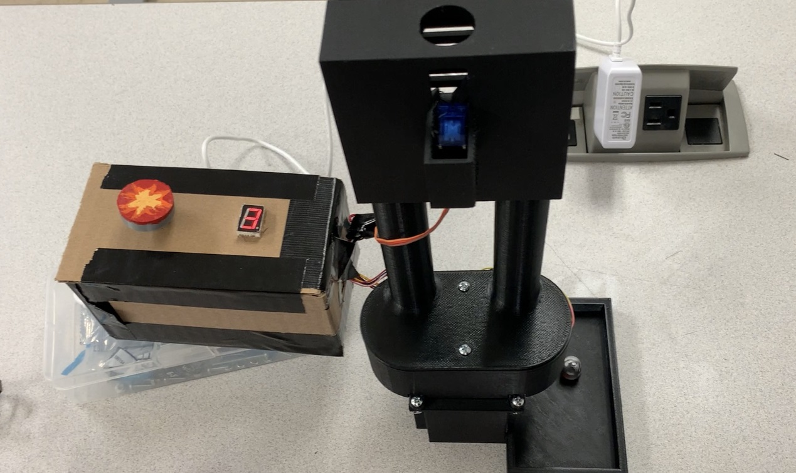
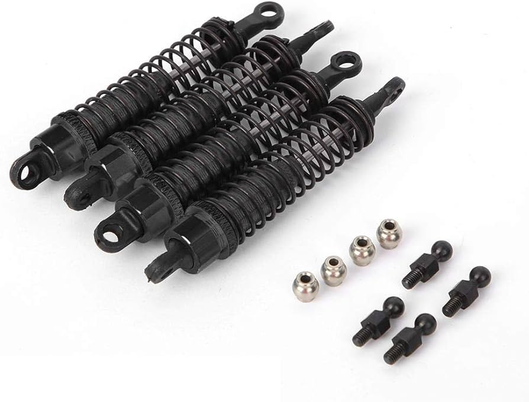

Portfolio
-
Automatic Dice Tower
For my mechatronics class, me and a partner designed an Automatic Dice Tower. The apparatus contains two magazines of different dice. You can use a hidden button to select a magazine, then use the rotary encoder as a knob and button to select a nuber of dice and roll them. Then dice can be returned to the magazine they came from at the top. The device was designed in solidworks and programmed in C on an ATmega2560.
-
RC Car Shaker Test Lab Apparatus
For my senior Capstone project, my team and I are creating a shaker test for Rose-Hulman's Analysis and Design of Engineering Systems Lab. It will be used to collect a bode plot from an RC car suspension model, which students can use to reinforce concepts with practical testing. Our primary challenge is getting the device to be low cost, so that the school can manufacture enough for an entire class.
-
Portfolio Website

Would you look at that. You're here right now!